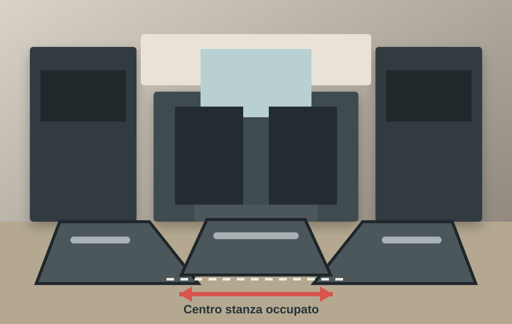

Cosa si guadagna
Più basi, più pensili e una colonna dispensa.

Caso pratico cucina compatta
La richiesta era sfruttare ogni angolo. Il problema nascosto era capire se, una volta inseriti colonne, basi ed elettrodomestici, restassero davvero passaggio, piano libero e libertà di movimento.
Guarda il conflittoLa scena reale
La composizione risultava piena e ordinata nel render. Ma in una stanza compatta, ogni modulo aggiunto riduce la distanza utile tra i fronti e rende più difficile usare più funzioni nello stesso momento.
Il compromesso nascosto
Più basi, più pensili e una colonna dispensa.
Piano di lavoro continuo, apertura comoda degli elettrodomestici e spazio sufficiente per muoversi senza intralci.
Cosa andava controllato
La misura va letta con cassetti, forno e lavastoviglie aperti.
Il piano può frammentarsi tra lavello, cottura e colonne.
In una cucina compatta, pochi centimetri cambiano completamente il comfort.
Prima dell'ordine
Invia misure, render e disposizione proposta. Ti dirò se il caso è valutabile.
Invia il progetto su WhatsApp